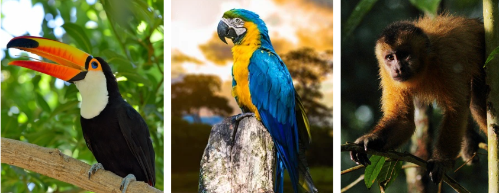

O continente sul-americano é uma das regiões mais diversas do planeta, tanto em aspectos naturais quanto culturais. Localizado majoritariamente no hemisfério sul e banhado pelos oceanos Atlântico e Pacífico, ele é formado por 12 países, entre eles o Brasil, a Argentina, o Chile, a Colômbia e o Peru. A América do Sul se destaca pela grande variedade de climas, relevo diversificado, rica hidrografia e, principalmente, pela abundância e diversidade de sua vegetação.
O clima da América do Sul é bastante variado por causa da sua grande extensão territorial e das diferenças de relevo. Próximo à Linha do Equador predomina o clima equatorial, quente e úmido o ano todo. No centro do continente é comum o clima tropical, com uma estação chuvosa e outra seca. No extremo sul há clima temperado, com estações bem definidas. Já na Cordilheira dos Andes o clima varia conforme a altitude, sendo mais frio nas áreas elevadas, e no norte do Chile destaca-se o Deserto do Atacama, uma das regiões mais secas do mundo.
O relevo da América do Sul é formado por planícies, planaltos e cadeias montanhosas, com destaque para a Cordilheira dos Andes na costa oeste. No centro-leste predominam planaltos antigos, como o Planalto Brasileiro e o Planalto das Guianas, além de grandes planícies, como a Planície Amazônica e a Planície do Prata. O continente também apresenta grande diversidade cultural, com influências indígenas, europeias e africanas.
A hidrografia sul-americana é extremamente rica. O continente abriga alguns dos maiores rios do planeta, com destaque para o Rio Amazonas, considerado o rio de maior volume de água do mundo. Ele percorre vários países e forma a maior bacia hidrográfica da Terra. Outros rios importantes são o Rio Paraná, o Rio Paraguai e o Rio Uruguai, que formam a Bacia do Prata, além do Rio São Francisco, no Brasil. Esses rios são fundamentais para o abastecimento de água, geração de energia elétrica, transporte e agricultura.
A vegetação da América do Sul é bastante diversificada, resultado das diferenças de clima, relevo e localização geográfica do continente. Entre os principais biomas está a Floresta Amazônica, a maior floresta tropical do mundo, marcada pela grande biodiversidade e pelo clima quente e úmido. No Brasil central destaca-se o Cerrado, caracterizado por vegetação de savana, com árvores baixas e gramíneas adaptadas à seca. No sul do continente encontram-se os Pampas, formados principalmente por campos naturais. Ao longo do litoral brasileiro está a Mata Atlântica, rica em espécies, mas bastante reduzida pelo desmatamento. Já no Nordeste do Brasil, a Caatinga apresenta plantas adaptadas ao clima semiárido. Essa variedade de formações vegetais é essencial para a biodiversidade, o equilíbrio climático e a preservação dos recursos naturais do continente.